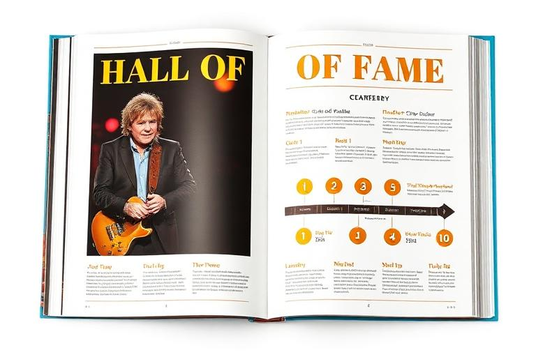

Milestones, trophies and history
Achievements & Awards
RockMundo records success in more than one way. Achievements track persistent milestones and progress across the game, while awards, nominations and trophies provide a historical record of standout competitive or career recognition.
In brief
Achievements reward milestones across different parts of RockMundo and may show requirements, progress, rarity or rewards. Awards are a different kind of recognition: they record nominations, wins, categories, ceremonies or years where relevant. Both are useful for telling the story of a career, but neither should be mistaken for a single overall power score.
Achievements and awards are different
Achievements
Persistent goals or milestones tied to activities, progression and notable accomplishments.
Progress
Where the system exposes progress, you can see how close your active character is to a visible milestone.
Awards
Recognition connected to a category, period, ceremony or competitive result rather than a general task checklist.
Legacy
Wins, trophies and milestone history add context to the character or band's longer story.
The achievement catalogue
The achievement system has a structured catalogue with categories, rarity or tier information, requirements and rewards where those fields are intended to be visible. Earned achievements are stored separately from the catalogue so your progress and unlock history can follow the appropriate active character or profile context.
- Read the visible description before assuming what an achievement wants.
- Use the progress view when a milestone exposes measurable progress.
- Expect achievements to cover more than music alone as the world expands.
- Do not assume a rare achievement is automatically more useful to your current career than a common one.
How to use achievements well
Achievements are most useful as prompts to explore systems you might otherwise ignore. An early milestone can introduce a feature; a longer-term milestone can give a veteran character another reason to keep developing. You do not need to chase every category at once.
- Choose your current career focus. Decide what your character is actually trying to become.
- Review nearby milestones. Look for achievements that naturally overlap that plan.
- Explore deliberately. Use achievements to sample unfamiliar systems when you want variety.
- Let long goals happen over time. Some milestones are more satisfying as career history than as an immediate grind target.
Awards, nominations and trophies
Award history can include nominations and wins, grouped by useful context such as category, ceremony or year. That makes awards part of RockMundo's historical layer: two characters with similar current stats can still have very different careers because of what they won, when they won it and what they were doing at the time.

Building a legacy
Achievements, statistics, awards and historical recognition all contribute different evidence about a career. The Hall of Immortals and other prestige views can recognise exceptional long-term play, but the Compendium does not reduce legacy to one published formula.